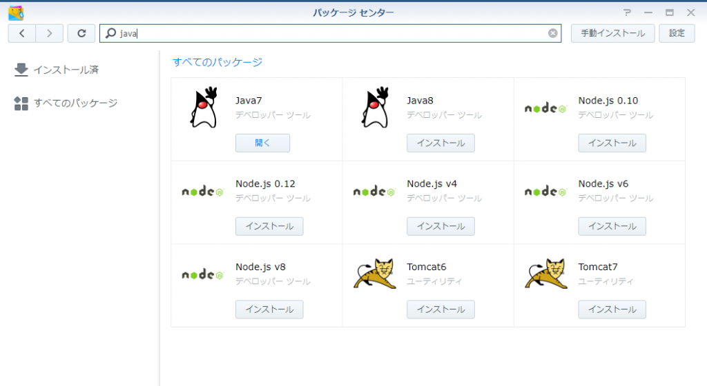
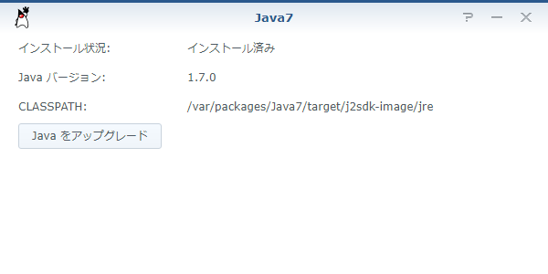
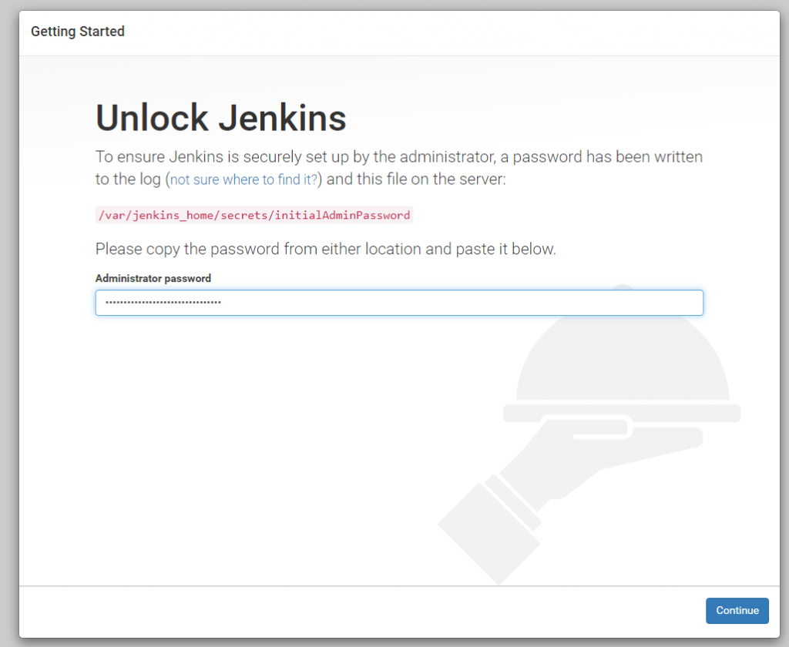
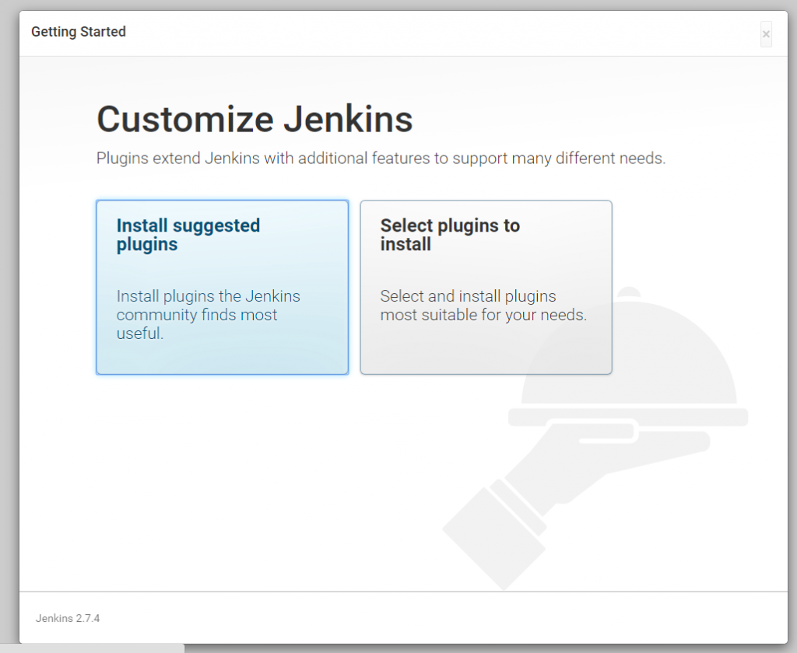
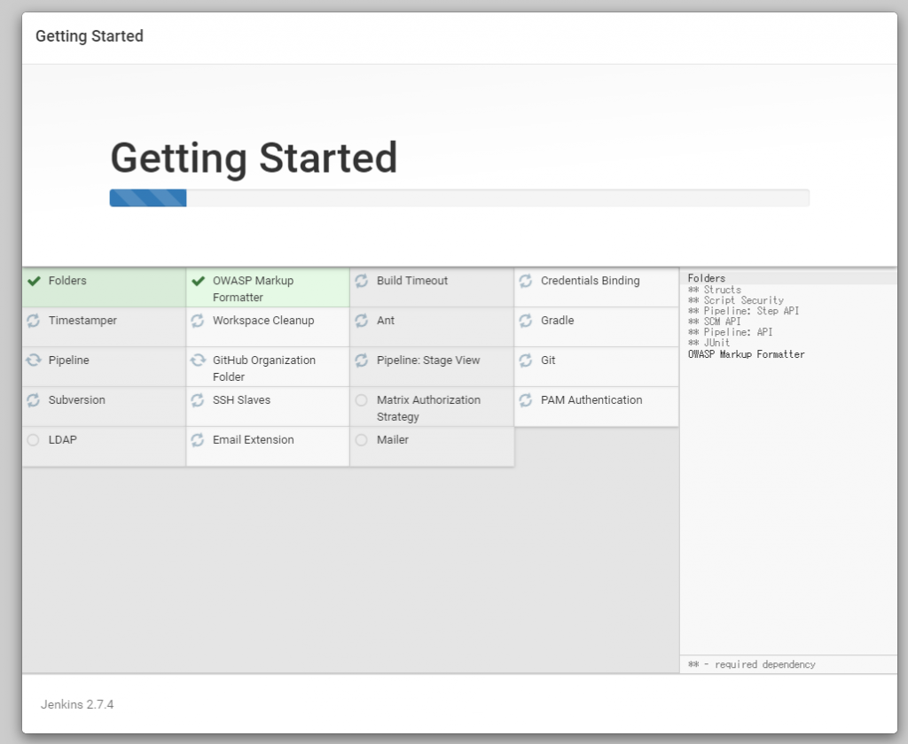
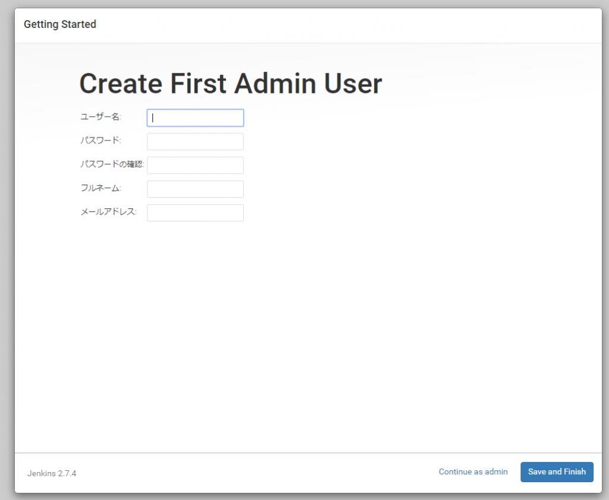
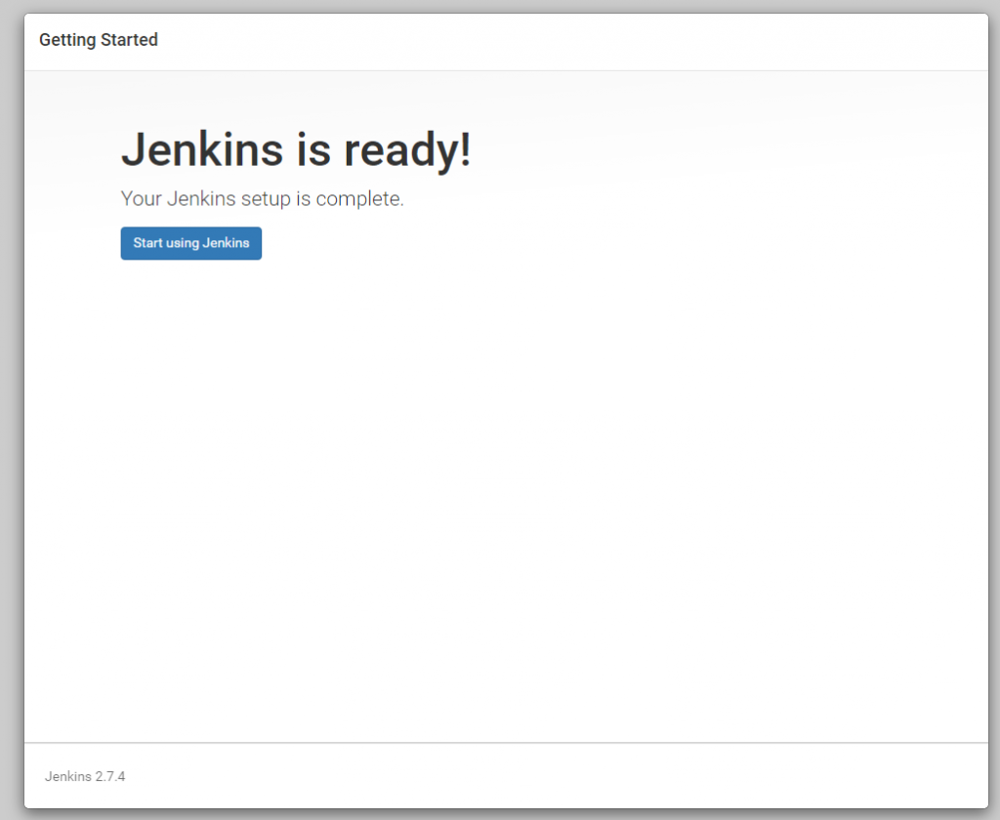

Introduction
JenkinsをSynology NASに構築したのでメモ。 Slaveノードは別マシンに構築します。
How to?
用意するもの
jenkinsのディレクトリを用意します。 これらはdockerコンテナにマウントされます。 今回は下記をマウントします。
- /docker/jenkins/jenkins_home
- /docker/jenkins/share/jenkins
- /docker/jenkins/share/jenkins/ref
そして権限を変更します。
1 | sudo chown -R 1000 /volume1/docker/jenkins |
Jenkinsのダウンロード
dockerの場合、コンテナ内のデータは破棄されてしまうため、Jenkins本体をマウントする形にすることでアップデートできるようにします。
Generic Java package (.war)**をダウンロードし、Jenkins.warを/docker/jenkins/share/jenkins**にコピーします。
キーストアの作成
HTTPSで接続するために作成します。既にLet’s Encryptで証明書は発行済みであるものとします。 HTTPで良い場合は、必要ありません。 Javaをインストールする必要があるのでパッケージ センターからインストールします。 パッケージ センター

{kind=link}
インストール後のパス

{kind=link}
続いて、下記のシェルをsudoで実行します。
1 | !/bin/bash |
下記のように実行します。 パスワードの空文字は許容されません。
1 | sudo ./generate_jenkins_keystore.sh |
コンテナの作成
キーストア作成の時に入力したパスワードを指定してコンテナの起動を実行します。 ホスト側のポートは適宜変更します。 HTTPで良い場合は、--httpから始まる引数を削除します。
1 | sudo docker run -v /volume1/docker/jenkins/jenkins_home:/var/jenkins_home \ |
コンソールが流れてしばらくするとadminの初期パスワードが表示されますのでメモしておきます。
1 | ************************************************************* |
初期設定
ブラウザからアクセスします。 Jenkinsのアンロック。メモした初期パスワードを入力
Jenkinsのアンロック

{kind=link}
プラグインのインストール。Install suggested plugins を選択

{kind=link}
インストール中

{kind=link}
ユーザ登録。入力後、Save and Finish

{kind=link}
準備完了

{kind=link}